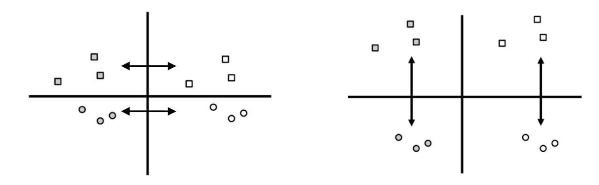

Por qué las listas desbloqueadas en las elecciones generales pueden ser muy desestabilizadoras
La fragmentación política desestabilizó al Paraguay más de una vez en su historia, y las listas desbloqueadas en las elecciones generales la fomentan.
Con este artículo busco convencerles de dos cosas. Primero, busco convencerles de que la fragmentación política es, y ha sido históricamente, desestabilizadora. Segundo, busco convencerles de que las listas desbloqueadas—especialmente en las elecciones generales legislativas—incentivan la fragmentación política y que, consecuentemente, son desestabilizadoras. La principal recomendación de este artículo es que deberíamos volver a bloquear las listas en las elecciones legislativas generales porque nos evitaría muchos problemas y porque es lo más fácil de implementar en el corto plazo que tenemos antes de las próximas elecciones generales.
La fragmentación política es, y ha sido históricamente, desestabilizadora.
¿Qué tienen en común la mayoría de las crisis políticas que hemos tenido desde el inicio de nuestra historia como república?
En 1904 el Partido Colorado, dominante en el momento, tuvo una división importante entre los Caballeristas y los Civilistas, mientras que el Partido Liberal estaba dividido entre Cívicos y Radicales, y la competencia por poder entre esas diversas facciones llevó a una guerra civil. En 1911, el Partido Liberal, dominante en ese momento, se dividió entre Radicales leales a Gondra, Radicales leales a Jara, y Cívicos, mientras que los colorados competían como una fuerza menor aparte también, y esas divisiones llevaron a otra guerra civil. En 1922, el Partido Liberal, dominante en ese momento, también se dividió entre aquellos leales a Gondra y aquellos leales a Schaerer, y eso llevó a otra guerra civil. Finalmente, en 1947 y en los años subsecuentes, hubo una guerra civil y varios golpes de estado por la competencia entre liberales, colorados Democráticos, colorados del Guión Rojo, y febreristas. Estos eventos, que históricamente fueron más graves y violentos que los golpes “normales” digamos de la época, tuvieron en común que todos fueron antecedidos por una excesiva fragmentación política.
El hecho que la fragmentación política crea inestabilidad es algo que se sabe en la ciencia política. Es más, la fragmentación es especialmente dañina en sistemas presidenciales, porque en sistemas parlamentarios la inestabilidad se resuelve con cambios constantes del primer ministro (como suele ocurrir en Italia, Israel y Bélgica). Pero en sistemas presidenciales la fragmentación crea inestabilidades y conflictos que no se pueden resolver hasta las próximas elecciones (ver aquí). Hay evidencias de que los sistemas presidencialistas sólo son más inestables que los parlamentarios si tienen un alto nivel de fragmentación legislativa (ver aquí). Como vimos arriba estos hechos no son cosas abstractas que sólo ocurren en otros países. Si miramos nuestra historia, es claro que la fragmentación política creó muchísimos problemas de estabilidad en el Paraguay. Nosotros mismos, como paraguayos, pudimos acumular evidencias sobre este hecho en nuestra propia historia.
Pero algunos dirán que todos estos conflictos ocurrieron antes de la democracia, entonces son irrelevantes. Bueno, ¿tenemos alguna evidencia de inestabilidad política en la era democrática?
Obvio que sí. Al considerar los momentos de inestabilidad del periodo democrático, tenemos muchas para elegir: 1) el fraude en las internas coloradas que dio la nominación a Wasmosy en vez de Argaña; 2) la insubordinación militar de Lino Oviedo a Wasmosy; 3) las internas coloradas donde Oviedo fue descartado como precandidato, entonces ganó Cubas, pero Argaña quedó como precandidato a vicepresidente; 4) el Marzo Paraguayo, la renuncia de Cubas y la asunción de Macchi; 5) los conflictos entre Castiglioni y Nicanor por el tema de la reelección; 6) toda la presidencia de Fernando Lugo, con UNACE como partido independiente; y 7) los conflictos entre Añeteté y Honor Colorado por el tema de la reelección. El conflicto 1 fue causado por una división en el partido colorado entre Rodríguez y Argaña. Los conflictos 2-4 y en parte el 6 fueron causados por Oviedo y UNACE y sus conflictos con el Partido Colorado. Finalmente, los conflictos 5 y 7 fueron causados por divisiones intrapartidarias que resultaron a partir del tema de la reelección. En pocas palabras, todos los conflictos de nuestra democracia fueron causadas por la fragmentación política. En algunos casos esta fragmentación fue inter-partidaria, especialmente cuando UNACE era una fuerza independiente, pero muchas veces también esta fragmentación fue intra-partidaria, con movimientos internos de los partidos tradicionales que competían violentamente por el poder. (Es más los conflictos inter-partidarios causados por el UNACE iniciaron como conflictos intra-partidarios ya que el UNACE empezó como un movimiento interno del Partido Colorado)
La conclusión principal de esta sección es esta: la fragmentación política fomenta la inestabilidad política. Esto fue cierto en épocas anteriores a la democracia, pero también fue cierto durante la democracia. En la siguiente sección discutiré cómo los sistemas electorales contribuyen a la fragmentación, y por qué esperaríamos que las listas desbloqueadas en las elecciones legislativas generales van a crear mayor fragmentación política que las listas bloqueadas.
Las listas desbloqueadas promueven la fragmentación y la inestabilidad—especialmente si son usadas para las elecciones generales—.
Viendo, en la sección anterior, como la fragmentación puede causar la inestabilidad política, muchos estarán pensando en este momento: bueno si hubo tanta inestabilidad en años anteriores cuando teníamos listas bloqueadas, entonces ¿qué importa si desbloqueamos las listas si ya había luego inestabilidad y fragmentación antes también? Ese es un excelente punto, pero mi argumento principal en esta sección no es que antes no había fragmentación, sino que el nuevo sistema crearía aún más fragmentación que el sistema anterior. Para llegar a esta conclusión, primero voy a explicar por qué había fragmentación en el sistema anterior de listas bloqueadas y después voy a explicar por qué las listas desbloqueadas en las elecciones legislativas generales incrementarían la fragmentación política en el Paraguay.
Por qué teníamos fragmentación aún teniendo listas cerradas en el periodo democrático del Paraguay
La principal razón por la que había fragmentación mientras teníamos listas bloqueadas era por las internas. Específicamente, el código electoral decía que las listas bloqueadas se debían utilizar en las generales y en las internas. Esta combinación de instituciones electorales es muy rara, y que yo sepa ningún otro sistema presidencialista en el mundo las utiliza. Tener listas bloqueadas en las internas y en las generales significa que los partidos van a tener el incentivo de dividirse para competir en las elecciones internas, y después volver a juntarse para competir en las elecciones generales. Es gracias a los incentivos electorales que estas instituciones crean que los periódicos paraguayos están llenos de historias sobre como “el Partido Colorado es al mismo tiempo partido de gobierno y de oposición,” o como “los partidos buscan unificarse en cara a las elecciones generales,” con “abrazos Republicanos,” “operaciones cicatriz,” movimientos de “concordia,” etc. etc.
Para entender esto de manera más visual, imaginemos, como se ve en el gráfico de abajo, que existen dos partidos políticos—el partido gris y el partido blanco—y que cada partido tiene dos movimientos internos—el cuadrado y el circular. Las listas bloqueadas en las generales promueven la competencia inter-partidaria y la unidad intra-partidaria. Es decir, promueven la competencia entre el partido gris y el partido blanco, como se ve en el gráfico de abajo a la izquierda. En contraste, las listas bloqueadas en las elecciones internas promueven que haya divisiones intra-partidarias, ya que cada movimiento interno quiere recibir el control de su partidito político. Entonces, como muestra el gráfico de abajo a la derecha, eso promueve la división y la competencia intra-partidaria, y la competencia inter-partidaria se vuelve menos importante.

La conclusión principal de esta sub-sección es que, es cierto que el sistema de listas bloqueadas que teníamos antes ya causaba un nivel de fragmentación política, y eso es principalmente porque competir en las internas con listas bloqueadas hacía que los movimientos internos fragmenten a sus partidos para competir electoralmente. No nos debería sorprender que la mayoría de los conflictos políticos que tuvimos en nuestro país ocurrieron—usualmente en marzo—antes de las elecciones internas. Ni que después de esos conflictos durante las internas, los partidos siempre buscaban arreglarse lo más rápido posible para poder competir en las generales, con “abrazos republicanos,” “unidad” y “concordia.” Estas tendencias no eran coincidencias. Eran resultados directos de la manera que el sistema electoral anterior estaba diseñado. Los políticos estaban reaccionando a los incentivos electorales que existían.
Las listas desbloqueadas—en las generales—causarán aún más fragmentación e inestabilidad que el sistema anterior
En la sección anterior discutimos como el sistema de listas bloqueadas creaba fragmentación política durante las elecciones internas, pero después también fomentaba la unidad partidaria durante las elecciones generales. La principal diferencia del nuevo sistema que aprobamos es que las listas desbloqueadas fomentan la fragmentación durante las internas y también durante las generales. Con las listas desbloqueadas, ya que el voto preferencial puede cambiar el orden de las listas legislativas en las generales, eso significa que el conflicto intra-partidario de cada partido político ocurriría de vuelta en las elecciones generales. Mientras que antes el sistema promovía conflicto en las internas y después unidad, el nuevo sistema promueve conflicto intra-partidario en el 100% de las elecciones. Esto es una receta para fragmentación e inestabilidad.
Pongamos un ejemplo. En estas últimas elecciones del 2018, un conflicto muy importante ocurrió dentro del Partido Colorado entre los movimientos de Añeteté y HC, y dentro del Partido Liberal principalmente entre los Efrainistas y los Llanistas. Durante las internas la competencia entre estas facciones—y los demás partidos del congreso—llevaron a una crisis en Marzo del 2017, que resultó en la quema del edificio del Congreso Nacional. Esta crisis, cierto, fue por el tema de la reelección, pero ocurrió en el momento en que ocurrió porque los partidos tenían que decidir quiénes serían los pre-candidatos a presidente de cada partido, y específicamente en el Partido Colorado se tenía que definir si Horacio Cartes podría o no ser pre-candidato a presidente por el movimiento HC. En otras palabras, las elecciones internas, y la fragmetnación intra-partidaria fueron el motor principal de este conflicto.
Una vez concluidas la internas, con las listas partidarias ya conformadas por todos los partidos políticos, las aguas se calmaron ya para las generales. Esto es porque los que fueron enemigos dentro de cada partido ahora tenían incentivos de cooperar. Es decir, Honor Colorado y Añeteté eran partes de la misma lista entonces tenían incentivos de cooperar para que esa lista consiga la mayor cantidad de votos posibles, y lo mismo es cierto para los Llanistas y los Efrainistas. Para las generales entonces HC y Añeteté eran aliados y estaban luchando contra los Llanistas y Efrainistas que eran aliados.
Ahora, ¿qué hubiese pasado si en ese momento teníamos listas desbloqueadas en las generales? Si este fuese el caso, entonces HC y Añeteté, y los Efrainistas y Llanistas hubiesen tenido otra oportunidad para competir por la dominación de su partido político, ya que hasta en las generales tendrían la oportunidad de modificar el orden de las listas. Esto hubiese significado que, al menos en las elecciones legislativas, HC y Añeteté seguirían siendo enemigos en las generales, y los Efrainistas y los Llanistas también seguirían siendo enemigos en las generales. En pocas palabras, mientras que los conflictos que vimos en el 2017 después se redujeron en intensidad para las generales con las listas bloqueadas, con las listas desbloqueadas hubiésemos esperado que los conflictos vayan en aumento antes de las elecciones generales.
Y piensen que hasta con el sistema de listas bloqueadas, la presidencia de Mario Abdo Benítez ha sido extremadamente débil e incapaz por las divisiones de su partido. Si este nivel de incapacidad es lo que vemos hoy con listas bloqueadas que fomentan la cooperación intra-partidaria, en realidad es muy preocupante si encima de esto instauramos las listas desbloqueadas que fomentan mayor fragmentación. Es muy posible que con el nuevo sistema electoral tengamos gobiernos más ineficaces, con política más radical, y mayores conflictos continuos. Ésto es lo que fomenta el sistema de listas desbloqueadas en las elecciones generales legislativas.
Recomendación
La recomendación principal que propongo es volver a bloquear las listas para las elecciones generales legislativas. Esto sería lo mejor que se puede hacer porque 1) aún permite el reordenamiento de las listas legislativas durante las internas partidarias por parte de los afiliados de cada partido, y 2) mantiene el incentivo de reducir la fragmentación y el conflicto durante las elecciones generales. Realmente esto es lo mejor que podemos hacer también por la cercanía de las próximas elecciones generales, ya que implementar algo con lo que ya tenemos experiencia es mucho más fácil que inventar un sistema nuevo en el corto plazo. Habiendo dicho eso, también lo mejor sería mantener el nuevo sistema de votación electrónica ya que las necesitaríamos en caso que queramos mantener las listas desbloqueadas en las internas. Esto no es lo único que podríamos hacer, y pienso escribir más artículos sobre otras alternativas en el futuro (como el voto único transferible). Pero volver a bloquear las listas en las generales es realísticamente lo mejor que podemos hacer antes de las elecciones del 2023.
Es, también, de suma importancia volver a las listas bloqueadas antes de las próximas elecciones generales legislativas, porque si no ocurre antes de entonces va a ser sumamente difícil cambiar el sistema electoral de vuelta. Esto es porque los legisladores que asumen en 2023, si fueron electos con listas desbloqueadas, ya no van a querer cambiar ese sistema porque van a creer que les favorece—después de todo gracias a ese sistema ganaron. Si eso ocurre, es muy probable que la fragmentación y la inestabilidad política se vuelvan características aún más comunes y permanentes en nuestra joven democracia.
Comentarios Finales
En toda democracia tenemos que balancear dos cosas a la que deberíamos dar igual importancia: el conflicto y el consenso. El conflicto nos lleva a cuestionar las maneras viejas de hacer las cosas, nos mueve a innovar, y a trabajar por un futuro mejor. En cambio el consenso se asegura de cuidar a todos mientras buscamos avanzar. El consenso busca que todos, como dueños de nuestro país y de nuestra democracia, podamos estar felices en el país, y nos cuida en contra de que la prosperidad de pocos se construya sobre la espalda de muchos. Si nuestro país era un automóvil, con esperanzas de moverse hacia adelante hacia un futuro más próspero y feliz, el conflicto sería el acelerador que nos mueve hacia adelante, y el consenso el freno que nos mantiene seguros para no estrellarnos contra un árbol.
Desbloquear las listas en la internas aumenta un poco el conflicto que tendríamos adentro de los dos partidos políticos tradicionales del país. Eso hasta podría llegar a ser positivo, si promueve una renovación más competitiva adentro de los partidos. Darle un poco más de conflicto a nuestra democracia, y darle un poco más de aceleración de nuestro auto, podría hasta llegar a ser positivo.
Desbloquear las listas en las elecciones generales legislativas es absolutamente diferente. Es como cortarle los frenos a nuestro auto; es una receta para estrellarse. Exponenciar el conflicto hasta tal punto que elimina la posibilidad de crear consensos puede ser muy negativo. Incentiva comportamientos que haría que sea mucho más difícil legislar, podría llevar a la mayor inestabilidad del país, y también podría llevar a una polarización ideológica extrema donde todos nos peleamos contra todos, por todo, todos los días. Esto no es ficción, ya lo hemos visto muchas veces en nuestra historia, y es la realidad diaria de países que utilizan las listas desbloqueadas como Perú, Brasil y Colombia.
En el Paraguay, es cierto que los 32 años de democracia que tuvimos con las listas bloqueadas fueron inestables, pero en comparación a nuestra historia, también fueron el periodo de competencia política más estable de toda nuestra existencia. Esta competencia nos llevó a tener mayores libertades y derechos, y a mejorar de una manera nunca antes visto en nuestra historia. Es cierto que no estamos a la altura de muchos otros países, y nos falta demasiado por alcanzarlos. Nuestro país sigue siendo muy injusto, muy desigual, con mucha pobreza, ineficiencia en el estado, corrupción y con poca inversión en el capital humano de nuestros ciudadanos. Pero miren nuestra historia. Si aumentamos los conflictos sin considerar la consecuencias de esos conflictos, los más probable dado nuestra historia, es que nos vayamos para atrás y no para adelante.